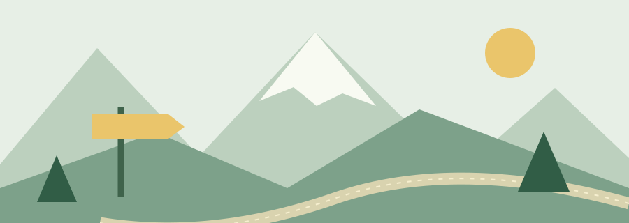
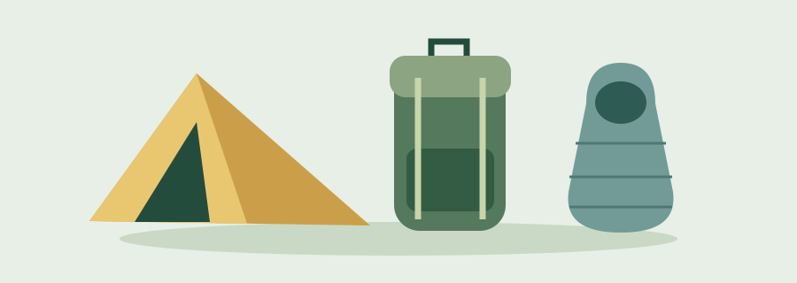
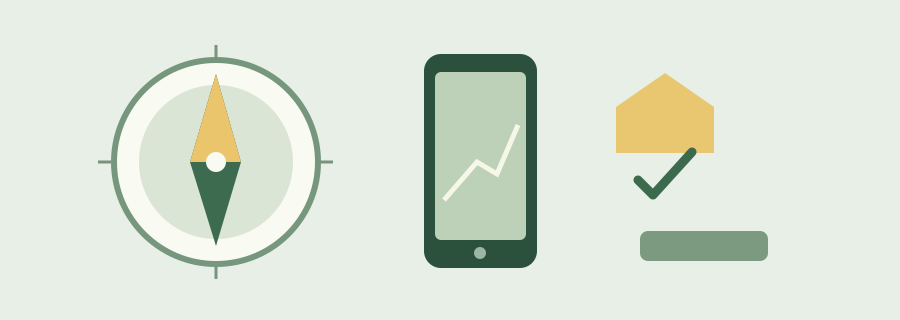
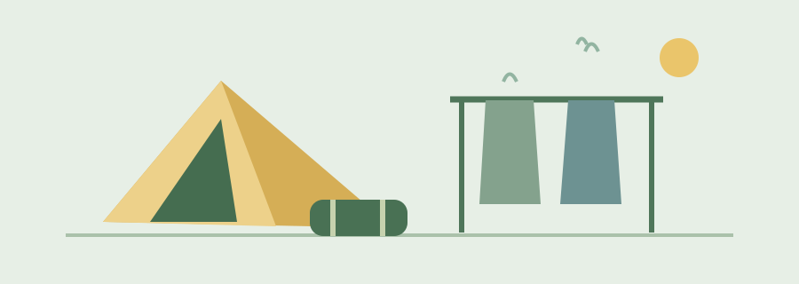

Первый поход не обязан быть сложным. Выберите понятный маршрут, соберите нужное и проверьте всё до выхода — пройдём подготовку по шагам.
Шаг 1 из 5
Выберите простой маршрут

Для первого раза подойдёт знакомая тропа без сложного рельефа, с понятным выходом к транспорту. Начните с прогулки на день. Когда освоитесь со снаряжением и темпом, запланируйте одну ночёвку на оборудованной стоянке.
Оцените путь, а не только расстояние
Посмотрите на перепад высоты, состояние тропы, доступ к питьевой воде и время обратного транспорта. Оставьте запас времени, чтобы вернуться засветло. Не выбирайте для первого самостоятельного выхода удалённые горные маршруты.
Уточните погоду и правила территории
Проверьте прогноз на весь день и ночную температуру, если остаётесь с ночёвкой. Узнайте, разрешены ли стоянки и требуется ли разрешение на посещение. При неблагоприятном прогнозе перенесите выход или выберите более простой вариант.
Если опыта пока нет, идите с подготовленным товарищем или инструктором. Для первого выезда важнее спокойный маршрут, чем большое расстояние.
Шаг 2 из 5
Подберите базовое снаряжение

Для прогулки нужен удобный рюкзак. Для ночёвки добавьте палатку, спальник и коврик. Не обязательно покупать всё сразу: аренда помогает попробовать разные варианты и понять, что подходит именно вам.
Рюкзак: сначала посадка
Примерьте его с грузом и отрегулируйте спинку, лямки и пояс. Объём выбирайте по списку вещей, а не по принципу «чем больше, тем лучше». Тяжёлые вещи располагайте ближе к спине, а дождевик и воду — так, чтобы их легко достать.
Палатка: место для людей и вещей
Проверьте размеры спального места, сезонность и комплект. Тамбур пригодится для обуви и рюкзаков. Соберите палатку до выезда: осмотрите дуги, колышки, оттяжки и молнии, потренируйтесь натягивать тент.
Спальник и коврик работают вместе
Ориентируйтесь на температуру комфорта спальника и ночной прогноз, а не на экстремальную температуру на этикетке. Коврик изолирует от холодной земли, поэтому он нужен даже с тёплым спальником. Уточните подходящий комплект для вашего маршрута.
Не готовьте на горелке и не используйте открытый огонь внутри палатки или тамбура. Соблюдайте правила территории и выбирайте подходящую открытую площадку.
Выберите прогулку на день, ночёвку или кемпинг и отмечайте собранные вещи. Дополните памятку под погоду, маршрут и личные потребности. Отметки сохраняются только до перезагрузки страницы.
Короткий маршрут без ночёвки
Всё для дня плюс место для сна
Отдых на оборудованной стоянке
Шаг 4 из 5
Проверьте всё перед выходом

Связь и навигация
Скачайте офлайн-карту, проверьте заряд телефона, фонаря и внешнего аккумулятора. Сообщите близкому человеку маршрут и время, когда выйдете на связь. Не рассчитывайте, что мобильная сеть будет доступна на всём пути.
Комплект и план возвращения
Проверьте крепления рюкзака и комплектацию палатки. Уложите запасную одежду в гермоупаковку, уточните транспорт и запланируйте запас времени. Если условия стали сложнее ожидаемого, сократите маршрут или возвращайтесь.
Сомневаетесь в выборе вещей? Расскажите о маршруте и прогнозе — поможем подобрать комплект.
Шаг 5 из 5
Верните комплект после похода

В конце похода пересчитайте колышки, сложите дуги и стряхните землю. Если палатка намокла, не оставляйте её надолго в закрытом чехле: просушите дома по инструкции или заранее предупредите прокат, что вернёте влажный комплект.
Не стирайте спальник и не используйте агрессивные средства без согласования: неправильная чистка может испортить утеплитель или пропитку. Расскажите о заедающей молнии и любых повреждениях — их важно заметить до следующей выдачи.
Если задерживаетесь, свяжитесь с прокатом до согласованного срока возврата. Продление возможно только после подтверждения, особенно в выходные и праздники.